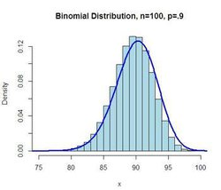
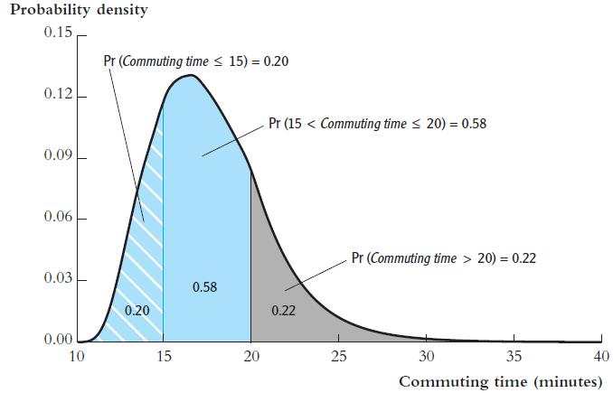
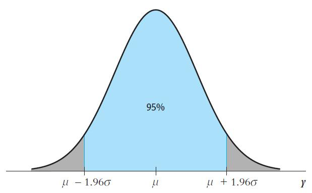
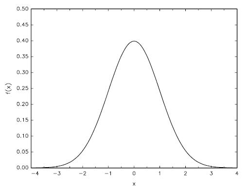
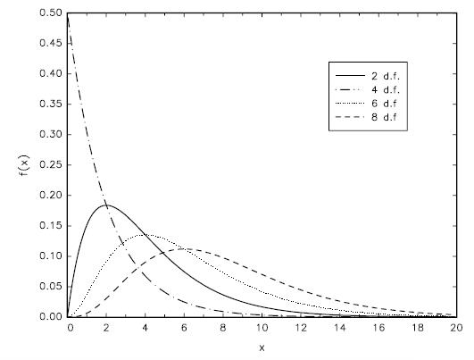
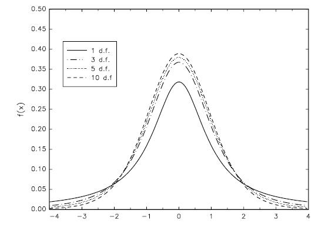
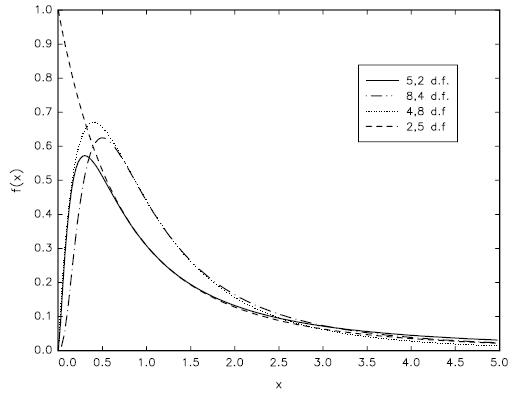
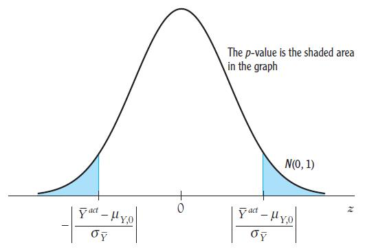

概率与统计基础
概率论
在本讲中，我会向大家介绍回归分析、结构分析和计量经济学中用到的核心概率与统计理论。我们生活在一个无处不随机的世界中。而概率论为量化和描述随机性提供了有用的工具。
单变量分布
基本概念
结果（outcomes）是一个随机过程中许多相互排斥的潜在结果（results）。例如，明天某一时刻的天气可能是晴天，可能是多云，可能是阴天，也可能是狂风暴雨。这些不同的天气情况就是结果（outcomes），但是只有其中一个结果（outcomes）会发生。而且，通常每种结果都不是等可能性发生的。而概率就是一种结果（outcome）在长期内出现次数的比例。例如，在你们写作课程论文期间，电脑宕机的概率为20%，也就是说，你们在未来写100篇论文的时候，会有20篇论文写作过程中，电脑“挂”了（这个故事除了告诉我们概率的含义外，还提醒我们要注意时刻记得保存、备份重要文档）。
所有可能结果（outcomes）的集合成为样本空间。样本空间的子集成为事件。例如，“写论文过程中电脑宕机不会超过一次”成为一个事件，即电脑宕机次数0,1是电脑宕机这个样本空间的一个子集。
随机变量分为离散随机变量，例如，0,1,2,3，⋯⋯和连续随机变量。计量经济学中使用的变量大部分为离散随机变量。
离散随机变量的概率分布是所有可能的变量值及其发生的概率列表（所有概率之和等于1）。累积概率分布，cumulative probability distribution就是随机变量小于等于某一特定值的概率，也称为累积分布函数，简写为c.d.f.或者累积分布。例如，电脑宕机的次数M是一个随机变量，每次宕机的概率如表1所示。
| 结果(宕机次数) | |||||
|---|---|---|---|---|---|
| 2-6 | 0 | 1 | 2 | 3 | 4 |
| 1-6 概率分布 | 0.8 | 0.1 | 0.06 | 0.03 | 0.01 |
| 1-6 累积概率分布 | 0.8 | 0.9 | 0.96 | 0.99 | 1 |
一个非常重要的离散分布函数是伯努利分布（Bernoulli distribution）

而连续随机变量的累积概率分布与离散累积概率分布类似。连续随机变量的概率用概率密度函数，probability density function来概述。任何两点之间的概率密度函数所形成的区域就是该随机变量落在这两点之间的概率。概率密度函数可以简写为p.d.f.，或者密度函数，或者密度。

主要统计量
期望
随机变量Y的期望用E(Y)表示，\(\mu_{Y}\)，指长期重复试验或发生的随机变量的均值。离散随机变量的期望是所有可能结果的加权平均，权数为每个结果发生的概率。
例如，上面的电脑宕机次数的期望为： \[\begin{equation} \emph{E(M)}=0.8\times0+0.1\times1+0.06\times2+0.03\times3+0.01\times4=0.35 \end{equation}\]
也就是说，电脑宕机次数的期望为0.35次。需要注意的是，实际电脑宕机次数肯定是一个整数，我们说“写论文期间电脑宕机了0.35次”没有任何意义。而公式（1）的计算结果表明，写论文过程中，电脑宕机的平均次数。那么，随机变量的期望计算公式为 \[\begin{equation} \emph{E(Y)}=p_1y_1+p_2y_2+\cdots+p_ky_k=\sum_{i=1}^{k}{p_iy_i} \end{equation}\]
标准差和方差
一个随机变量Y的方差用\(var(\emph{Y})\)表示,其计算公式为\(var(\emph{Y})=E\left[(Y-\mu_{Y})^2\right]\)。
而标准差是方差的开方，用\(\sigma_{Y}\)表示。 \[\begin{equation} \sigma_{Y}^2=var(\emph{Y})=E\left[(Y-\mu_{Y})^2\right]=\sum_{i=1}^{k}{(y_i-\mu_{Y})^2p_i} \end{equation}\]
根据公式（3），我们计算电脑宕机次数的方差和标准差为 \[\begin{equation} var(\emph{Y})=0.8\times(0-0.35)^2+0.1\times(1-0.35)^2+0.06\times(2-0.35)^2+0.03\times(3-0.35)^2+0.01\times(4-0.35)^2=0.647 \end{equation}\] \[\begin{equation} \sigma_{Y}=\sqrt{var(\emph{Y})}=\sqrt{0.647}\approx0.80 \end{equation}\]
均值、方差的性质
（1）\(Z=a+bY\)，a，b都是常数，那么\(E(Z)=E(a+bY)=a+bE(Y)\);
（2）\(var(Z)=var(a+bY)=b^2var(Y)\)
其它分布特征
分布的特征除了均值和方差（或标准差）外，还有另外两个重要的形状指标：峰度—— 测量尾部有多“厚”，和偏度——测量分布非对称性程度。均值、方差、峰度和偏度都是分布的矩。
一个随机变量Y的分布的峰度计算公式为 \[\begin{equation} S(Y)=\frac{E\left[(Y-\mu_{Y})^4\right]}{\sigma_{Y}^4} \end{equation}\]
偏度的计算公式为 \[\begin{equation} S(Y)=\frac{E\left[(Y-\mu_{Y})^3\right]}{\sigma_{Y}^3} \end{equation}\]
多变量分布
大多数经济学问题都是以两个或多个随机变量的形式出现，例如，教育与工作收入、性别与工作收入等等。因此，我们必须了解多个随机变量的联合概率分布、边际概率分布和条件概率分布。
联合概率分布
两个离散随机变量（\(X,Y\)）的联合概率分布就是两个随机变量同时取得某个值（例如，\(x,y\)）时的概率，其可以写成\(Pr(X=x,Y=y)\)。
边际概率分布
变量\(Y\)的边际概率分布仅仅只是Y概率分布的另一个名字，它是为了区分单一变量Y的分布和Y 与其他变量的联合概率分布。从联合概率分布中计算Y的边际概率分布，就是把Y 取某个特定值的所有概率相加。假设X取l个值，Y=y的边际概率分布为 \[\begin{equation} Pr(Y=y)=\sum_{i=1}^{l}{Pr(X=x_i,Y=y)} \end{equation}\]
条件概率分布
给定X的值，随机变量Y的概率分布就叫做Y的条件概率分布，表示为\(Pr(Y=y|X=x)\)。条件概率分布的计算公式为： \[\begin{equation} Pr(Y=y|X=x)=\frac{Pr(X=x,Y=y)}{Pr(X=x)} \end{equation}\]
条件期望
给定X,Y的条件期望，也称为给定X，Y的条件均值，是给定X，Y的条件分布的均值。已知X=x条件下，Y的条件期望为 \[\begin{equation} E(Y|X=x)=\sum_{i=1}^{k}{y_iPr(Y=y_i|X=x)} \end{equation}\]
期望迭代法则
Y的均值是给定X的条件下Y的条件期望的加权平均，而权重是X的概率分布。数学表达式为 \[\begin{equation} E(Y)=\sum_{i=1}^{k}{E(Y|X=x_i)Pr(X=x_i)} \end{equation}\]
换句话说，Y的期望就是给定X条件下，Y的期望的期望 \[\begin{equation} E(Y)=E[E(Y|X)] \end{equation}\]
公式（12）右边的内部期望是给定X条件下Y的条件期望，而外部期望是利用X的边际分布计算得到。而（12）就是期望迭代法则。
需要注意的是，如果给定X条件下Y的条件期望为0，那么，Y的均值也为0。证明：\(E(Y|X)=0\),\(E(Y)=E[0]=0\)，证毕。
条件方差 基于X的Y的条件方差是给定X的条件下Y的的概率分布的方差。公式为 \[\begin{equation} var(Y|X=x)=\sum_{i=1}^{k}{[y_i-E(Y|X=x)]^2Pr(Y=y_i|X=x)} \end{equation}\]
相互独立 两个随机变量X和Y，如果在不提供一个随机变量的信息情况下，能得出另一个随机变量的值，那么，称X，Y独立分布，或者相互独立。尤其是，如果给定X的条件下Y的条件分布等于Y的边际分布，那么X,Y相互独立，即对于所有的x,y，如果 \[\begin{equation} Pr(Y=y|X=x)=Pr{Y=y} \end{equation}\] 那么，X和Y相互独立。
把等式（14）代入公式（9）中，得到X和Y独立的另一个等价条件：\[\begin{equation} Pr(X=x,Y=y)=Pr(X=x)Pr(Y=y) \end{equation}\]
也就是说，两个独立随机变量的联合分布就是它们的边际分布之积。
协方差和相关 协方差是测度两个随机变量共变程度的一种指标。通俗地说就是，你变，我也变，绝对值越大，说明我们两个越“心有灵犀”。X和Y的协方差是X与其均值之差乘以Y与其均值之差的期望，用\(cov(X,Y)\)表示。数学公式为 \[\begin{equation} cov(X,Y)=\sigma_{XY}=E[(X-\mu_x)(Y-\mu_Y)]=\sum_{i=1}^{k}{\sum_{j=1}^{l}{(x_j-\mu_X)(y_i-\mu_Y)Pr(X=x_j,Y=y_i)}} \end{equation}\]
如果两个随机变量同方向变动，那么，协方差为正；如果反方向变化，则协方差为负；如果相互独立，则协方差为0。
由于协方差的单位为X的单位乘以Y的单位，因此，协方差的数值难以理解。为了解决“单位”问题，另一种表示X和Y之间相互依赖程度的测量指标就是相关系数，即协方差除以标准差之积： \[\begin{equation} corr(X,Y)=\frac{cov(X,Y)}{\sqrt{var(X)var(Y)}}=\frac{\sigma_{XY}}{\sigma_X\sigma_Y} \end{equation}\]
当\(corr(X,Y)=0\)，就说X和Y不相关。相关系数总是处于-1和1之间。
如果Y的条件均值不依赖于X，那么，X和Y不相关。
需要注意的是，独立，一定不相关；但不相关，不一定独立。
分布特征的性质：
（1）\(E(X+Y)=E(X)+E(Y)=\mu_X+\mu_Y\)
（2）\(var(X+Y)=var(X)+var(Y)+2cov(X,Y)=\sigma_{X}^2+\sigma_{Y}^2+2\sigma_{XY}\)
（3）\(E(X^2)=\sigma_X^2+\mu_Y^2\)
（4）\(E(XY)=\sigma_{XY}+\mu_X\mu_Y\)
常用分布
计量经济学中最常用的概率分布是正态分布、卡方分布、t分布和F分布。
正态分布
正态分布的 连续随机变量有钟型概率密度形状，如图3所示。

数学定义：一个连续随机变量\(x_i\)的概率密度函数为 \[\begin{equation} f(x_i)=\frac{1}{\sqrt{2\pi\sigma^2}}e^{-\frac{1}{2\sigma^2}}(x_i-\mu)^2 \end{equation}\] 遵循正态分布，且均值为\(\mu\)，方差为\(\sigma^2\)。
由上述数学定义可以看出，正态分布有两个参数，均值\(\mu\),方差\(\sigma\)，因此，正态分布又可以表示为\(N(\mu,\sigma^2)\)。而其中，\(\mu\)又可以叫做尺度参数（scale parameter），\(\sigma\)称为形状参数(shape parameter)。 （注意：尺度参数和形状参数在后面的DSGE模型的贝叶斯估计中经常用到。大家知道有这些名称即可。）由此，可以定义标准正态分布，即均值为0，方差为1的正态分布\(N(0,1)\)，通常用Z表示。标准正态积累分布方程用大写希腊字母表示\(\Phi\)，\(Pr(Z\le{c})=\Phi(c)\)。标准正态分布函数的图形如图4所示。

从图3和图4中可以看到，正态分布的图形是在均值\(\mu\)处对称的。从图3中还可以看出，随机变量值落在均值附近\(\pm2\sigma\)区间内的概率为0.95。
我在前面的1.1.2节给出了均值和方差的性质。这些内容也可以理解为随机变量的线性转换。即\(x_i\)是正态随机变量，那么它的线性变换\(y_i\)也是正态分布。且两个正态随机变量的线性组合仍然为正态分布。
如果\(x_i\)是独立、同分布(iid)的正态随机变量，那么 \[\begin{equation} \overline{x}_i~N(\mu_x,\frac{\sigma^2}{n}) \end{equation}\]
任何一个正态随机变量都可以通过线性变换转换成标准正态随机变量。这一过程称为变量标准化。这也为不同均值方差的正态分布的概率计算带来了方便。变量标准化就是随机变量减去均值，然后除以标准差。
例1：假设\(Y~N(1,4)\),求\(Pr(Y\le2)\)
\(\frac{(Y-1)}{\sqrt{4}}=\frac{1}{2}(Y-1)\)
\(Y\le2\)等价于\(\frac{1}{2}(Y-1)\le{\frac{1}{2}(2-1)}\)
\(Pr(Y\le2)=Pr[\frac{1}{2}(Y-1)\le{\frac{1}{2}}]=Pr(Z\le{\frac{1}{2}})=\Phi(0.5)=0.691\)
\(\Phi(0.5)=0.691\)可以从临界值表中查询。
下面，我们来看看，正态分布变换成标准正态分布的正式数学过程：
（1）首先，标准化
\(Z=\frac{\overline{x}-\mu_x}{\sqrt{\frac{\sigma_x^2}{n}}}=\frac{\overline{x}}{\sqrt{\frac{\sigma_x^2}{n}}}-\frac{\mu_x}{\sqrt{\frac{\sigma_x^2}{n}}}\)
（2）Z的均值
\(EZ=\frac{E\overline{x}}{\sqrt{\frac{\sigma_{x}^{2}}{n}}}-\frac{\mu_x}{\sqrt{\frac{\sigma_{x}^{2}}{n}}}=\frac{\mu_x}{\sqrt{\frac{\sigma_{x}^{2}}{n}}}-\frac{\mu_x}{\sqrt{\frac{\sigma_{x}^{2}}{n}}}=0\)
（3）Z的方差
\(Var(Z)=E(\frac{E\overline{x}}{\sqrt{\frac{\sigma_{x}^{2}}{n}}}-\frac{\mu_x}{\sqrt{\frac{\sigma_{x}^{2}}{n}}})^2=E[\frac{n}{\sigma_x^2}(\overline{x}-\mu_x)^2]=\frac{n}{\sigma_x^2}\frac{\sigma_x^2}{n}=1\)
正态分布在统计学中非常的重要。不仅是因为许多随机变量都遵循正态分布，而且更重要的是，任何样本随着其样本规模的增大，样本均值趋向于服从正态分布，这就是中心极限定理。
卡方分布
卡方分布是m个标准正态随机变量的平方和的分布，常用于检验某些类型的假设。其中，m称为自由度。例如，\(Z_1\),\(Z_2\),\(Z_3\)是标准正态随机变量，那么，\(Z_1^2+Z_2^2+Z_3^2\)就是一个自由度为3的卡方分布。一个自由度为m的卡方分布表示为：\(\chi_m^2\)。下面给出卡方分布的正式定义：
定义：假设\(Z_1\),\(Z_2\),\(Z_3\),\(\cdots\),\(Z_n\)是一组简单的随机样本，且服从\(Z_i~N(0,1)\)，那么， \[\begin{equation} \sum_{i=1}^n{Z_i}~\chi_n^2 \end{equation}\] 其中，n为卡方分布的自由度。
\(\chi_n^2\)的概率密度函数为 \[\begin{equation} f_{\chi^2}(x)=\frac{1}{2^{\frac{n}{2}}\Gamma(\frac{n}{2})}x^{\frac{n}{2}-1}e^{\frac{-x}{2}},x\geq0 \end{equation}\]
其中，\(\Gamma(x)\)是伽马函数。如果任意一个服从正态分布的随机变量\(x_i~N(\mu_x,\sigma_x^2)\)，都有
\[\begin{equation} \sum_{i=1}^n{(\frac{x_i-\mu}{\sigma})^2}~\chi_n^2 \end{equation}\]
卡方分布如图5所示。

t分布
t分布，也称为学生t分布是标准正态分布与自由度m的卡方分布除以m再开方的比率。用\(t_m\)表示。
定义：假设\(Z_i~N(0,1)\),\(Y~\chi_m^2\),且Z和Y相互独立，那么， \[\begin{equation} \frac{Z}{\sqrt{\frac{Y}{m}}}~t_m \end{equation}\] 其中，m为t分布的自由度。t分布的概率密度函数如图6所示。

t分布也是钟型图案，类似于正态分布。但是当自由度较小（20或更小），更多落在尾部，也就说t分布比正态分布更扁平；当自由度大于等于30时，t分布近似于正态分布，而\(t_{\infty}\) 等价于正态分布。
F分布
自由度为m,n的F分布2是一个自由度为m的卡方随机变量除以m比上自由度为n的卡方随机变量除以n 的比值，表示为\(F_{m,n}\)。
定义：假设\(Y~\chi_m^2,W~\chi_n^2\),且Y和W相互独立，那么， \[\begin{equation} \frac{Y/m}{W/n}~F_{m,n} \end{equation}\] 其中，m，n是F分布的自由度。
注意：（1）如果x服从t分布，\(x^2\)服从F分布。（2）当分母的自由度趋向无穷时，\(\frac{Y}{m}~F_{m,\infty}\)。F分布的图形如图7所示。

随机抽样与大样本近似
随机抽样与样本矩
随机抽样就是从一个更大的总体中随机抽取一个样本。这个过程为了使样本均值（见1.3.1节）本身成为一个随机变量。那么，就可以探讨样本均值的分布——抽样分布。
简单随机抽样是指从总体N个单位中任意抽取n个单位作为样本，使每个可能的样本被抽中的概率相等的一种抽样方式。
因为\(Y_1,Y_2,\cdots,Y_n\)是从总体中随机抽取，因此，每一个样本\(Y_i\)的边际概率分布都相同，都与总体Y的分布相同。当\(Y_i\)有相同的边际概率分布时，我们称\(Y_1,Y_2,\cdots,Y_n\) 为同分布。
在简单随机抽样下，已知Y1的值并不能为Y2提供任何信息。因此，给定Y1条件下，Y2的条件概率分布与Y2的边际概率分布相同。也就是说，在简单随机抽样下，Y1的分布独立于Y2的分布。当\(Y_1,Y_2,\cdots,Y_n\)来自于相同的总体，又独立分布时，我们称为独立同分布(i.i.d)。
考虑随机样本\({Y_1,Y_2,\cdots,Y_n}\)，假设\(EY_i=\mu\)，\(Var(Y_i)=\sigma^2\)。定义\(S=Y_1+Y_2+\cdots+Y_n\)为样本和。那么， \[\begin{equation} ES=E(Y_1+Y_2+\cdots+Y_n)=EY_1+EY_2+\cdots+EY_n=n\mu \end{equation}\]
\[\begin{equation} Var(S)=E(S-ES)^2=E(Y_1+Y_2+\cdots+Y_n-n\mu)^2=E[\sum_{i=1}^n{(Y_i-\mu)}=n\sigma^2 \end{equation}\]
定义样本均值为\(\overline{Y}=\frac{\sum_{Y_i}}{n}\)。那么， \[\begin{equation} E\overline{Y}=E\frac{S}{n}=\frac{1}{n}ES=\frac{1}{n}n\mu=\mu \end{equation}\]
\[\begin{equation} Var(\overline{Y})=E(\overline{Y}-\mu)^2=E(\frac{S}{n}-\mu)^2=frac{1}{n^2}E(S-n\mu)^2=\frac{\sigma^2}{n} \end{equation}\]
大样本近似
目前，有两种方法刻画抽样分布：精确法和近似法。
精确分布又称有限抽样分布。
“近似法”利用近似式来表达抽样分布，这种方法依赖于大样本规模。抽样分布的大样本近似通常称为渐近分布——“渐近”是因为随着n趋向于无穷，近似就变成精确了。
注意：即使样本只有30个观测值，近似也非常精确。因为计量经济学中的观测值通常达到成百上千，因此，渐近分布能为精确抽样分布提供一个较好的近似。
当样本很大的时候，两个法则很关键：大数法则和中心极限定理。
大数法则是当样本规模很大时，\(\overline{Y}\)以很高的概率接近于\(\mu_Y\)。
中心极限定理是当样本规模很大时，标准化样本均值的抽样分布，\(\frac{(\overline{Y}-\mu_Y)}{\sigma_{\overline{Y}}}\)，近似服从正太分布。
因此，渐近正态分布并不依赖于Y的分布。渐近理论为回归分析提供了极大的简化。
小结
1、The probabilities with which a random variable takes on different values are summarized by the cumulative distribution function, the probability distribution function (for discrete random variables), and the probability density function (for continuous random variables).
2、The expected value of a random variable Y (also called its mean, mY),denoted E(Y), is its probability-weighted average value. The variance of Y is \(\sigma_Y^2=E[(Y-\mu_Y)^2]\), and the standard deviation of Y is the square root of its variance.
3、The joint probabilities for two random variables X and Y are summarized by their joint probability distribution. The conditional probability distribution of Y given X = x is the probability distribution of Y, conditional on X taking on the value x.
4、A normally distributed random variable has the bell-shaped probability density in Figure 4. To calculate a probability associated with a normal random variable, first standardize the variable and then use the standard normal cumulative distribution.
5、Simple random sampling produces n random observations \(Y_1,\cdots,Y_n\) that are independently and identically distributed (i.i.d.).
6、The sample average, Y, varies from one randomly chosen sample to the next and thus is a random variable with a sampling distribution. If \(Y_1,\cdots,Y_n\) are i.i.d., then:
a. the sampling distribution of \(\overline{Y}\) has mean \(\mu_Y\) and variance \(\sigma_{\overline{Y}}^2=\frac{\sigma_{Y}^2}{n}\);
b. the law of large numbers says that \(\overline{Y}\) converges in probability to \(\mu_Y\); and
c. the central limit theorem says that the standardized version of \(\overline{Y}\), \(\frac{(Y-\mu_Y)}{\sigma_{\overline{Y}}}\), has a standard normal distribution [N(0,1) distribution] when n is large.
统计学概述
统计学是应用数据来了解我们所生活世界的一门科学（Stock and Watson，2015）。统计工具能提供一些我们关注的总体分布特征。
我们对整个世界，或者整个中国经济、社会、人口感兴趣。但是，以目前的技术水平，我们不可能去调查14人口，因为调查总体的成本非常大。但我们又想知道总体分布特征，怎么办？统计学的主要任务就是来解决这个问题。回忆一下，前一节讲过的随机抽样。我们只需要从总体中随机抽取样本，然后，利用统计方法，结合随机样本信息来推断总体分布特征。这样也可以得到一个较为满意的近似结果。
计量经济学中使用的统计方法主要有三种：估计、假设检验与置信区间。估计就是从样本数据中，为一个总体分布特征——均值、方差等——计算出一个“最佳猜测”值。 假设检验就是提出一个假设，然后用样本证据来验证假设是否为真。置信区间就是利用一组样本数据来估计未知总体分布特征的范围或区间。
估计
再次回忆一下随机抽样，从总体中随机抽取的样本\(Y_1,\cdots,Y_n\)是独立同分布（i.i.d.），且与总体Y同分布，那么，样本均值\(\overline{Y}\)就能很自然地被当作是总体均值\(\mu_Y\)。这种样本均值也称为总体均值的估计量3。
但是，计算样本均值\(\overline{Y}\)是得到总体均值估计量的唯一一种方式吗？答案是否定的。\(Y_1,\cdots,Y_n\)都是与Y同分布，那么，\(Y_1\)也可以作为总体均值的一个估计量。以此类推，事实上，\(\mu_Y\)的估计量很多。那么，我们如何判断一个估计量比另一个估计量“更好”呢？我们前面讲过，抽样随机变量和样本均值都有概率分布，那么，这个问题还可以表达成：一个估计量的合意分布特征是什么呢？
既然，我们是从样本信息中推断未知总体分布特征。那么，最合意的结果肯定是，样本估计量尽可能的接近总体分布“真值”。由此，可以给出，合意结果的三个特征： 无偏性、一致性和有效性。注意，在后面的回归分析中，这三个特征非常非常重要。
无偏性 如果你通过重复抽样来评估一个估计量，一般来说，你会得到一个“真值”。因此，一个估计量的合意性质就是要使其抽样分布均值等于总体均值\(\mu_Y\)。 如果是这样，那么，我们就称这个估计量无偏。用\(\hat{\mu_y}\)来表示\(\mu_Y\)的估计量。用\(E(\hat{\mu_y})\)表示估计量抽样分布的均值。如果\(E(\hat{\mu_y})=\mu_Y\)，那么，估计量\(\hat{\mu_y}\)是无偏的，反之亦然。
一致性 当样本量很大时，由样本的随机变动引起的\(\mu_Y\)值的不确定性就非常小。也就是说，\(\hat{\mu_y}\)落入真值\(\mu_Y\)的一个较小区间内的概率随着样本量的增长而接近于1。即是说，\(\hat{\mu_y}\)是\(\mu_Y\)的一致估计。
有效性 如果你有两个无偏的估计量\(\hat{\mu_y}\)和\(\tilde{\mu_Y}\)，那么，你会如何选择？此时，你应该选择最小方差的估计量。如果\(\hat{\mu_y}\)的方差比\(\tilde{\mu_Y}\)更小，就说明\(\hat{\mu_y}\) 比\(\tilde{\mu_Y}\)更有效4。
下面，我们来看看样本均值\(\overline{Y}\)是否满足上述估计量的三个标准。
（1）样本均值等于总体均值已经在1.4.1节证明\(\overline{Y}=\mu\)，因此，样本均值是无偏的。
（2）根据大数法则，见1.4.2节，样本规模越大，\(\overline{Y}\)以很大概率接近\(\mu\)，因此，样本均值是一致的。
（3）那怎么判断\(\overline{Y}\)是有效的估计量呢？回忆一下，我在前面提到过，\(\mu_Y\)的估计量还有很多，例如\(Y_1,Y_2,\cdots,Y_n\)。我们现在选择用\(Y_1\)与\(\overline{Y}\)进行比较。首先，\(Y_1\)与\(\overline{Y}\)都是无偏估计。而\(Y_1\)的方差为\(Var(Y_1)=\sigma_Y^2\)。 根据1.4.1节，\(\overline{Y}\)的方差为\(\frac{\sigma_Y^2}{n}\)。只要\(n\ge2\)，那么，\(\overline{Y}\)的方差就小于\(Y_1\)的方差，因此，\(\overline{Y}\)是有效估计量。
综上所述，我们也把样本均值\(\overline{Y}\)称为最优线性无偏估计（Best Linear Unbiased Eestimator，BLUE）。
此外，还有一点非常重要，那就是随机抽样的重要性。虽然我们不能实施一个完全随机的抽样，但是我们设计的抽样要尽可能降低偏误。
假设检验
待检验的假设成为原假设。假设检验就是用数据来比较原假设与另一个假设——备择假设。如果原假设不成立，那么，备择假设成立。在统计学中，原假设通常为总体均值等于某一特定值，用\(H_0\)表示，即 \[\begin{equation} H_0:E(Y)=\mu_{Y,0} \end{equation}\]
最常用的备择假设为\(H_1:E(Y)\neq\mu_{Y,0}\)，这种类型被称为双向备择假设，因为该假设允许\(E(Y)\)要么大于特定值，要么小于特定值。
统计学理论将会告诉我们如何利用样本数据来判断是否接受\(H_0\)，还是接受\(H_1\)。
现实中，我们不可能知道总体均值，只能用随机抽样的样本均值\(\overline{Y}\)代替。那么，\(\overline{Y}\)不可能精确地等于\(\mu_{Y,0}\)。\(\overline{Y}\)与\(\mu_{Y,0}\)之间的差异，要么是因为真实均值并不等于\(\mu_{Y,0}\)（原假设为假），要么因为真实均值等于\(\mu_{Y,0}\) （原假设为真）但由于随机抽样使得\(\overline{Y}\)与\(\mu_{Y,0}\) 不等。这两种可能性，几乎区分不了，但我们可以计算一个概率来允许检验原假设。即利用数据来计算原假设的p值。
p值,也称为显著性概率是利用样本数据计算的一个对原假设不利的概率值。也就是说，p值越小，结果越显著。其数学定义为 \[\begin{equation} p-value=Pr[|\overline{Y}-\mu_{Y,0}|\geq|\overline{Y}^{act}-\mu_{Y,0}|] \end{equation}\] 其中，\(\overline{Y}^{act}\)表示用实际数据计算的样本均值，\(Pr_{H_0}\)原假设下计算的概率。也就是说，p值是\(\overline{Y}\)的分布尾部超出\(\mu_{Y,0}\pm|\overline{Y}^{act}-\mu_{Y,0}|\)的区域。如果p值越大，观测到的\(\overline{Y}^{act}\)就与原假设一致，如果p较小，则拒绝原假设。

t统计量
\[\begin{equation} t=\frac{\overline{Y}-\mu{Y,0}}{SE(\overline{Y})} \end{equation}\]
当样本规模很大时，t的分布近似于标准正态分布\(N(0,1)\)
在假设检验中通常犯两类错误：（1）第一类错误，原假设为真时却被拒绝；（2）第二类错误，原假设为假时却没有拒绝。
如果你选择拒绝原假设（为真）的预设概率水平（例如，5%），那么，只有p 值小于0.05时才拒绝原假设。在实践中，5%对应的标准正态分布的尾部区域是\(\pm1.96\)之外的区域，即简单规则为 \[\begin{equation} 如果|t^{act}|\geq1.96,拒绝H_0 \end{equation}\]
也就是说，第一类错误的预设概率就是检验的显著性水平。
实践中，常用的显著性水平有：10%、5%、1%、0.1%。
置信区间
总体均值的95%置信区间就是真值有95%的概率落入该区间。当样本规模很大时，90%、95%、99%对应的置信区间为
\(90\%:\mu_Y=[\overline{Y}\pm{1.64E(\overline{Y})}]\)
\(95\%:\mu_Y=[\overline{Y}\pm{1.96E(\overline{Y})}]\)
\(99\%:\mu_Y=[\overline{Y}\pm{2.58E(\overline{Y})}]\)
贝叶斯统计概述
贝叶斯（T. Bayes，1702-1763）是英国数学家。他首先将归纳推理法用于概率论基础理论，并创立了贝叶斯统计理论，对于统计决策函数、统计推断、统计估算等作出了重要贡献。
贝叶斯于1763年在英国皇家学会学报上发表“An essay towards solving a problem in the doctrine of chances"。该文中提出的二项分布参数推断方法后来被称为贝叶斯定理。贝叶斯公式 \[\begin{equation} P(A|B)=\frac{P(A)P(B|A)}{P(B|A)P(A)+P(B|A^c)P(A^c)} \end{equation}\]
看上去贝叶斯公式只是把 A 的后验概率转换成了 B 的后验概率 + A 的边缘概率的组合表达形式，因为很多现实问题中\(P(A|B)\)很难直接观测，但是\(P(B|A)\)和\(P(A)\)却很容易测得，利用贝叶斯公式可以方便我们计算很多实际的概率问题。
具体可以参见：
（1）朱慧明，林静. 2009，《贝叶斯计量经济模型》，科学出版社
（2）Koop, G., Poirier, D. J., Tobias, J. L. (2007). Bayesian econometric methods. Cambridge University Press.
（3）Geweke, J. (2005). Contemporary Bayesian econometrics and statistics (Vol. 537). John Wiley and Sons.
（4）Koop, G., Korobilis, D. (2010). Bayesian multivariate time series methods for empirical macroeconomics. Foundations and Trends? in Econometrics, 3(4), 267-358.